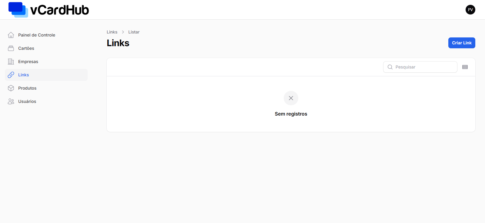
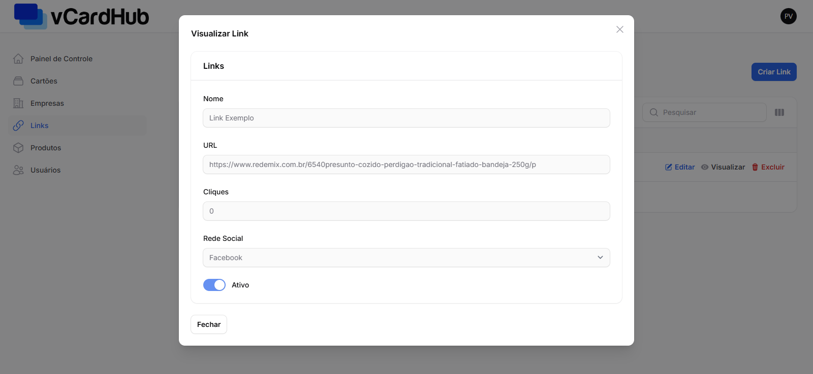

Manual do Sistema
vCardHub - Versão 1.0
1. Introdução
Bem-vindo ao manual do vCardHub. Este documento tem como objetivo orientar os usuários sobre a utilização das principais funcionalidades do sistema.
Nota: Este manual está atualizado para a Versão 1.0 do sistema, lançada em 10 de Março de 2025
2. Configurações
Para garantir o funcionamento ideal do vCardHub, é essencial que o ambiente de hospedagem atenda aos requisitos mínimos de hardware e software. Este documento descreve as configurações necessárias para execução em produção (Laravel Cloud ou servidor dedicado) e desenvolvimento local, assegurando desempenho, segurança e compatibilidade com o Laravel 12. Siga as especificações abaixo para evitar problemas de instalação, lentidão ou incompatibilidade de dependências. Caso utilize o Laravel Cloud, a infraestrutura já estará pré-configurada, simplificando o processo de deploy.
Requisitos Mínimos
- CPU: 1 vCPU (recomendado 2 vCPU para produção)
- Memória RAM: 1 GB (recomendado 2 GB para produção)
- Armazenamento: 20 GB SSD
- Sistema Operacional: Linux (Ubuntu 22.04 LTS)
- PHP: 8.0 ou superior
- Banco de Dados: MySQL 8.0
- Servidor Web: Apache
- Cache: Redis
Requisitos Adicionais
- Composer 2.5+ (para gerenciamento de dependências)
- Git (para deploy contínuo)
- Extensões PHP necessárias:
sudo apt install php8.2-{bcmath,ctype,curl,dom,fileinfo,json,mbstring,openssl,pdo_mysql,tokenizer,xml,zip,fpm,gd}
Observações
- O Laravel Cloud já oferece ambientes otimizados para Laravel, então você não precisa se preocupar com configurações manuais de servidor.
- Se estiver usando um servidor VPS/Cloud próprio, siga os requisitos acima.
- Para desenvolvimento local, o Laravel Sail (Docker) ou Laragon/XAMPP são boas opções.
3. Instalação no Laravel Cloud
Criando uma nova aplicação

No painel principal vai em New application

Agora vamos adicionar a plataforma de hospedagem de código, escolha o provedor de hospedagem de código onde seu projeto está hospedado

Com a plataforma já cadastrada, vamos selecionar o projeto que queremos subir

Vamos agora atribuir um nome à nossa aplicação e escolher a região

Agora podemos criar a aplicação, apos isso o Laravel Cloud irá clonar seu repositorio, verificar e atualizar dependiancias de projetos
Configurando o banco de dados

- Estando tudo certo com a nossa aplicação teremos acesso a esse painel, onde podemos ver os clusters sendo eles: rede, domínios, aplicação, banco de dados, cache e armazenamento.
- Agora vamos configurar o nosso banco de dados. Vai em Add database


Aguarde o banco de dados ser provisionado, pode levar alguns minutos.

Para acessar as configurações do banco de dados, clique no icone de três pontos do cluster de database. E ative o Enable public endpoint

Clique em View credentials


Para integrar seu projeto ao banco de dados, procure pelo arquivo .env
DB_CONNECTION=mysql
DB_HOST=seu_servidor
DB_PORT=3306
DB_DATABASE=seu_banco_de_dados
DB_USERNAME=seu_nome_de_usuario
DB_PASSWORD=sua_senha
//Passe as informações diponibilizadas pelo Laravel Cloud para integrar o banco de dados
Inicie a maquina

Após configurar o banco de dados e iniciar a maquina, podemos fazer o deploy e acessar o dominio disponibilzado pelo Laravel Cloud

Nota: Caso já tenha um domínio cadastrado em uma plataforma de DNS, você pode fazer essa personalização.
4. Cadastro e Login
5. Painel principal
6. Módulos Principais
6.1 Módulo Usuários
6.1.1 Cadastrar Novo Usuário
No menu lataral vá para a opção Usuários nela clique na opção Novo Usuario/New User para se redirecionado para pagina de criação de usuário
Na pagina de criação de Usuario preencha os campos obrigatorios, representados pelos asteriscos vermelhos, e clique na opção create/criar.

Ao criar um novo usuário o mesmo ficará visivel na pagina inicial da seção usuários nela o usuário pode Editar/Edit, Visualizar/view, Deletar/Delete.
6.1.2 Editar Usuários
Para editar as informações de um Usuário já cadastrado basta clicar na opção Editar/Edit e modificar o que deseja, lembrando de clicar na opção Salvar Mudanças/Save Changes quando já tivar terminado, ou clicar na opção Cancel/Cancelar, caso não queira realizar as mudanças.
6.1.3 Visualizar Usuários
Para visualizar as informações de um usuário já cadastrado basta clicar na opção view/Visualizar e caso deseje fechar basta clicar na opção close/fechar
6.1.4 Excluir Usuários
Para excluir um usuário já cadastrado basta clicar na opção Deletar/Delete e depois clicar em Confirmar/confirm, ou caso não queira descartar aquele usuário basta clicar em Cancelar/cancel
6.2 Módulo Produtos
No painel princiapal vá para seção Produtos nela clique na opção Criar Produto
Nela Preencha os campos Nome, Preço, no campo Imagem realize um upload da foto do produto, na parte da URL do produto copie a URL do produto, e o por ultimo na opção Ativo indique se esse produto está ativo ou não.
Após a criação do Produto o usuário poderá visualiza-lo na pagina inicial da seção Produto.
O usuário pode editar o produto já criado:
O usuário pode excluir um produto já criado:
O usuário pode visualizar um produto já criado:
6.3 Módulo Empresa
6.3.1 Cadastrando uma Empresa
No painel principal vá para a seção Empresas nela clique na opção Criar.
Preencha todas as informações necessárias e siga para o proximo passo.

6.3.2 Visualizando Empresa
Após criar a empresa, clique novamente na seção Empresas para visualizar o cadastro realizado.
Você pode criar uma ou mais empresas, basta repetir o mesmo processo e visualizar as informções atualizadas.
Você também pode visualizar a empresa especifica que você deseja
6.3.3 Editar Empresa
Após clicar no botão Editar você podera Alterar as informações desejadas e salvar as alterações.

6.3.4 Excluir Empresa
O usuario tambem pode excluir uma empresa caso desejar, basta clicar no botão Excluir, assim deletando o cadastro desejado.
1. Criar Link
No painel principal, vá até a seção Criar Link. Nela, você poderá adicionar um novo link personalizado ao sistema. Para isso, siga as etapas abaixo:
- Preencha o campo Título do Link com um nome identificável, como "Site da Empresa".
- No campo URL do Link, insira o endereço completo do link, como por exemplo https://www.exemplo.com.
- Na opção Status, escolha entre "Ativo" (para links que devem ser exibidos) ou "Inativo" (para manter oculto no sistema).
Depois de preencher todos os campos, clique no botão Criar para salvar o link no sistema. O novo link será exibido na lista de links disponíveis.

2. Editar Link
Para editar um link já existente no sistema, siga as instruções abaixo:
- No painel principal, localize a seção Links e identifique o link que deseja editar.
- Clique no botão Editar correspondente ao link desejado.
- Na tela de edição, o sistema irá exibir os campos preenchidos com os dados atuais do link:
- Altere o Título se necessário.
- Modifique a URL conforme desejado (ex: corrigir ou atualizar o endereço).
- Atualize o Status para "Ativo" ou "Inativo", de acordo com a visibilidade desejada.
- Após realizar as alterações, clique em Salvar para confirmar as modificações.
O sistema irá atualizar o link na base de dados e ele será exibido com as novas informações na lista principal.

3. Página Inicial de Links
Na página inicial da seção Links, o usuário pode visualizar todos os links já cadastrados no sistema. Esta tela permite uma visão geral e rápida dos principais dados de cada link.
- Título: Exibe o nome atribuído ao link no momento do cadastro ou edição.
- URL: Mostra o endereço completo associado ao link, com possibilidade de acesso clicando diretamente no texto azul sublinhado.
- Status: Indica se o link está ativo (visível) ou inativo (oculto).
- Ações: Permite ao usuário Editar ou Excluir o link, conforme a necessidade.
Essa interface facilita a gestão de links existentes, possibilitando atualizações rápidas e exclusões sempre que necessário.
| Título | URL | Status | Ações |
|---|---|---|---|
| Exemplo Link | https://exemplo.com | Ativo |
4. Excluir Link
Ao clicar em Excluir em um link existente, o sistema solicitará uma confirmação para evitar exclusões acidentais.
- Uma mensagem será exibida com o nome do link a ser excluído, perguntando se deseja realmente removê-lo.
- Se clicar em Cancelar, a ação será interrompida e o link permanecerá no sistema.
- Se clicar em Excluir, o link será permanentemente removido do banco de dados e não poderá ser recuperado.
Essa funcionalidade garante maior controle e segurança na administração dos links cadastrados.
Tem certeza que deseja excluir o link "Exemplo Link"?
5. Visualizar Link
Na tela de Visualização de Link, o usuário pode consultar os detalhes completos de um link específico sem alterá-lo.
- Título: Mostra o nome dado ao link.
- URL: Exibe o endereço do link. Ao clicar nele, o sistema redireciona o usuário para a página correspondente.
- Status: Indica se o link está ativo ou inativo no sistema.
Essa visualização é útil para conferência rápida antes de tomar decisões como editar ou excluir o link.
